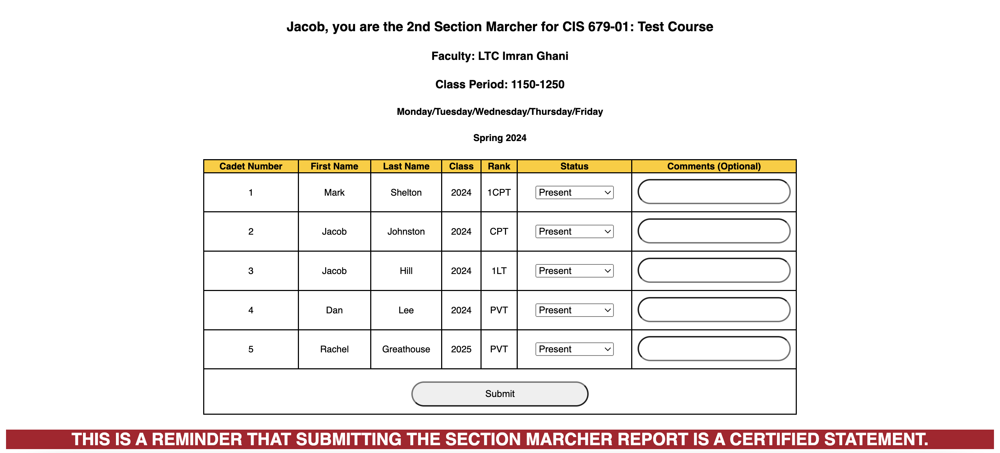
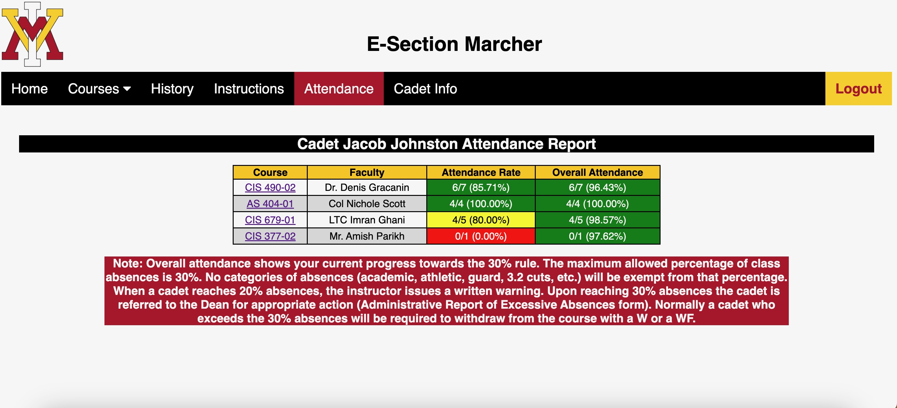

About E-Section Marcher
The E-Section Marcher System replaces the current paper accountability version of section marcher slips at VMI.
Our product will allow:
- A simple online interface to take accountability
- Automated process of submitting accountability slips
- Improved speed of the process for Corps academic accountability tenfold.
- Alleviates manual labor and stress for personnel involved
- Reduced waiting time from submission by the cadet to the time it is processed by the Commandant's Staff
E-Section Marcher

Cadet view during accountability process

View attendance for all courses